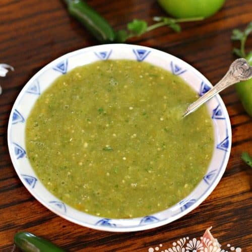

Spicy Tomatillo Salsa Verde

Description
Easy Homemade salsa verde, made with tomatillos, garlic, onion, and serrano or jalapeño peppers. This authentic Mexican salsa is made in a traditional way, and goes great with carnitas, steak tacos, and grilled chicken.
Ingredients
- 6 tomatillos husked and washed. About 2 cups.
- 3 tablespoon of chopped onion.
- 1 clove of garlic.
- 2 or 3 serrano peppers (if using Jalapeño peppers use 1).
- Salt to taste.
- About 3 cups of water to cook the tomatoes and peppers.
- 4 tablespoon Chopped Chilantro (optional).
Steps
- In a saucepan, bring the water to a boil. Add the pepper and tomatillos, simmer, uncovered, for 12-15 minutes.
- Drain, reserving ¼ cup water of the liquid.
- In a blender, puree the peppers, tomatillos, garlic and chopped onion, the cilantro if using, then add the reserved liquid if needed to get a saucier texture.
- Transfer to a bowl and add salt to taste.